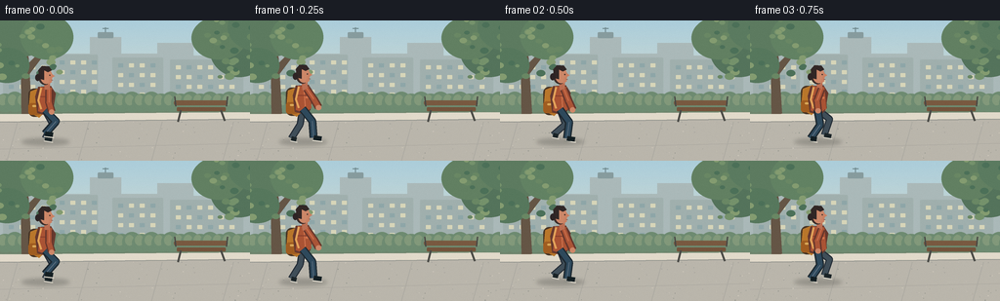
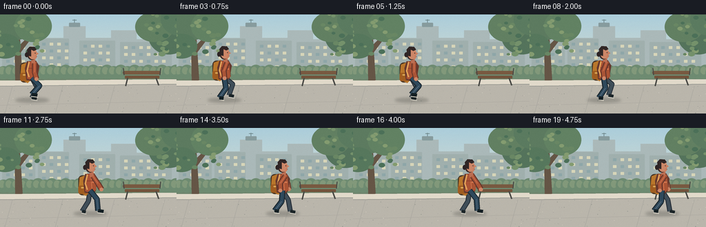
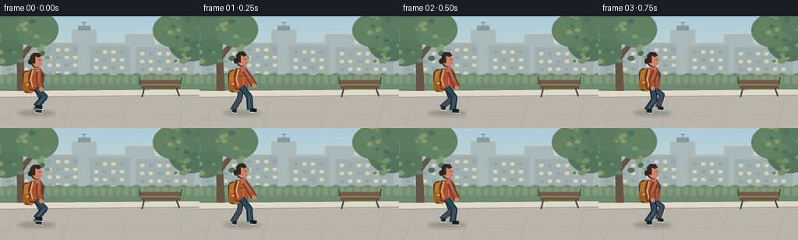
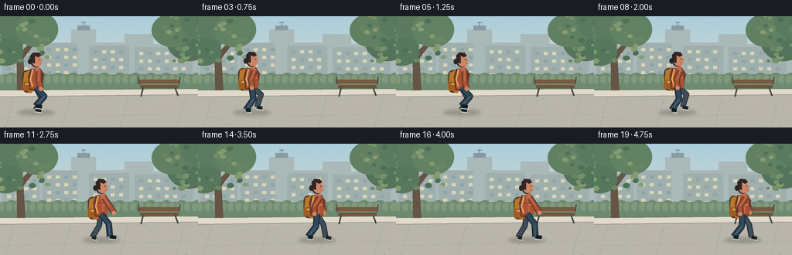

CODING AGENTS AS PIXEL WORLD MODELS
traex/GPT-5.6-Sol · motion_rationality_0032
点击播放 · 原生 RGB 像素
逐轮保存的候选
回放视频、检查图与代码变化。
每份候选均可单独播放。实际图片检查记录在下方工具轨迹中。
候选 01播放与检查图
点击播放 · 原生 RGB 像素


展开代码变化
--- 上一保存版本
+++ 本次保存版本
@@ -0,0 +1,201 @@
+from pathlib import Path
+import math
+import numpy as np
+from PIL import Image, ImageDraw, ImageFilter
+import artifact_io
+
+W,H,N,FPS = 256,144,20,4.0
+S=4
+rng=np.random.default_rng(32003)
+
+def sc(v): return int(round(v*S))
+def pts(seq): return [(sc(x),sc(y)) for x,y in seq]
+
+def ellipse(d, box, fill, outline=None, width=1):
+ d.ellipse(tuple(sc(v) for v in box), fill=fill, outline=outline, width=sc(width) if outline else 1)
+def polygon(d, p, fill): d.polygon(pts(p), fill=fill)
+def line(d, p, fill, width): d.line(pts(p), fill=fill, width=sc(width), joint='curve')
+def rr(d, box, radius, fill, outline=None, width=1):
+ d.rounded_rectangle(tuple(sc(v) for v in box), radius=sc(radius), fill=fill, outline=outline, width=sc(width))
+
+def background(frame):
+ # Subtle warm overcast sky gradient.
+ a=np.zeros((H*S,W*S,3),dtype=np.uint8)
+ top=np.array([170,203,216.],float); bot=np.array([236,226,199.],float)
+ for y in range(H*S):
+ q=y/(H*S-1); col=top*(1-q)+bot*q
+ a[y,:, :]=np.clip(col,0,255)
+ im=Image.fromarray(a,'RGB')
+ d=ImageDraw.Draw(im)
+ # Distant skyline, softened by atmosphere.
+ polygon(d,[(0,37),(30,37),(30,26),(63,26),(63,34),(92,34),(92,17),(124,17),(124,34),(161,34),(161,23),(198,23),(198,36),(230,36),(230,29),(256,29),(256,83),(0,83)], '#a9b7b7')
+ # rooftop details
+ rr(d,(100,12,116,18),1,'#879b9d'); line(d,[(108,12),(108,7)],'#70898d',1)
+ line(d,[(105,8),(111,8)],'#70898d',1)
+ # apartment windows
+ for bx,by,bw,bh in [(3,40,48,43),(55,35,45,48),(115,38,52,46),(174,40,75,44)]:
+ rr(d,(bx,by,bx+bw,by+bh),1,'#9faeac')
+ for wy in range(int(by+6),int(by+bh-3),10):
+ for wx in range(int(bx+6),int(bx+bw-4),11):
+ col='#d4d2b7' if (wx+wy+frame)%3 else '#8ea5a7'
+ rr(d,(wx,wy,wx+5,wy+4),0.5,col)
+ # distant low hedge
+ rr(d,(0,77,256,102),2,'#70856e')
+ for x in range(-5,262,10):
+ ellipse(d,(x,72+(x%4),x+20,94),'#6f8b72')
+ ellipse(d,(x+3,76,x+12,87),'#82987b')
+ # Tree trunks and broad canopies frame the walker.
+ polygon(d,[(21,20),(28,20),(33,100),(22,100)],'#665748')
+ polygon(d,[(26,47),(7,29),(9,27),(27,39)],'#665748')
+ polygon(d,[(28,45),(48,25),(51,27),(30,55)],'#665748')
+ for cx,cy,rx,ry,c in [(-1,22,27,22,'#526f5b'),(22,13,30,24,'#5e7b61'),(48,17,27,23,'#638264'),(7,46,23,18,'#58785e'),(245,31,30,27,'#56745d'),(224,18,28,22,'#638063'),(263,7,30,24,'#5c7b61')]:
+ ellipse(d,(cx-rx,cy-ry,cx+rx,cy+ry),c)
+ # foliage dabs add visual richness
+ for i in range(55):
+ side = 0 if i<30 else 1
+ cx=(rng.uniform(-12,64) if side==0 else rng.uniform(211,270)); cy=rng.uniform(-3,58)
+ r=rng.uniform(2,5); col=rng.choice(['#75916c','#6a8765','#849b71','#4e715a'])
+ ellipse(d,(cx-r,cy-r*.7,cx+r,cy+r*.7),col)
+ # pavement and curb
+ polygon(d,[(0,96),(256,94),(256,144),(0,144)],'#b8b4aa')
+ polygon(d,[(0,96),(256,94),(256,101),(0,104)],'#ded7c8')
+ line(d,[(0,104),(256,101)],'#8f918b',1)
+ # perspective seams and small aggregate
+ for x in [18,91,166,239]: line(d,[(x,104),(x-11,144)],'#aaa79f',0.7)
+ line(d,[(0,132),(256,126)],'#aaa79f',0.7)
+ for i in range(100):
+ x=float(rng.uniform(0,256)); y=float(rng.uniform(103,144)); r=float(rng.uniform(.18,.55))
+ ellipse(d,(x-r,y-r,x+r,y+r),rng.choice(['#989991','#c9c3b7','#aaa79f']))
+ # Bench in far plane
+ rr(d,(178,82,233,87),2,'#795b43'); rr(d,(181,89,231,93),1,'#74553e')
+ line(d,[(185,92),(182,104)],'#4c4c48',2); line(d,[(226,92),(230,103)],'#4c4c48',2)
+ line(d,[(180,88),(179,78)],'#4c4c48',1.5); line(d,[(232,88),(233,78)],'#4c4c48',1.5)
+ # soften only scenery slightly, retaining graphic detail
+ return im
+
+def ik_leg(hip, ankle, L1=16.0, L2=17.0):
+ hx,hy=hip; ax,ay=ankle; dx=ax-hx; dy=ay-hy
+ dist=max(1e-4,math.hypot(dx,dy)); dist=min(dist,L1+L2-0.05)
+ along=(L1*L1-L2*L2+dist*dist)/(2*dist)
+ height=math.sqrt(max(0,L1*L1-along*along))
+ ux,uy=dx/dist,dy/dist
+ # Choose the forward-facing bend of the knee.
+ kx=hx+along*ux+height*uy
+ ky=hy+along*uy-height*ux
+ return (kx,ky)
+
+def draw_limb(d, joints, outer, inner, wo, wi):
+ line(d,joints,outer,wo)
+ line(d,joints,inner,wi)
+ for p in joints[1:-1]: ellipse(d,(p[0]-wi/2,p[1]-wi/2,p[0]+wi/2,p[1]+wi/2),inner)
+
+def draw_person(im, i):
+ d=ImageDraw.Draw(im)
+ t=i/FPS
+ # 1.25 s gait: five sampled poses per cycle, translating steadily left-to-right.
+ phase=2*math.pi*t/1.25
+ bx=46 + (146/19)*i
+ bob=-1.35*abs(math.sin(phase))
+ by=bob
+ ground=123.0
+ # soft directional shadow that compresses on contact
+ shadow=Image.new('RGBA',im.size,(0,0,0,0)); sd=ImageDraw.Draw(shadow)
+ ellipse(sd,(bx-24,ground-2,bx+25,ground+5),(47,50,46,65))
+ shadow=shadow.filter(ImageFilter.GaussianBlur(sc(2.0)))
+ im.paste(shadow,(0,0),shadow)
+ d=ImageDraw.Draw(im)
+ hip=(bx,92+by)
+ shoulder=(bx+1,70+by)
+ # far leg: muted and drawn first
+ def leg_pose(p):
+ rel=12.0*math.sin(p)
+ lift=4.8*max(0.0,math.cos(p))**1.5
+ ankle=(bx+rel,ground-2-lift)
+ return ankle,ik_leg(hip,ankle)
+ ankle_f,knee_f=leg_pose(phase+math.pi)
+ draw_limb(d,[hip,knee_f,ankle_f],'#283039','#42505a',7.2,4.8)
+ # far shoe
+ forward_f=1 if math.sin(phase+math.pi)>-0.2 else -1
+ shoe_tip=(ankle_f[0]+(7 if forward_f>0 else 5), ankle_f[1]+1.4)
+ line(d,[ankle_f,shoe_tip],'#1f282b',5)
+ line(d,[(ankle_f[0]-1,ankle_f[1]+2.6),(shoe_tip[0]+1,shoe_tip[1]+2.6)],'#d8d4c8',1.2)
+ # far arm behind body, counter-swinging to legs
+ arm_ang=-0.58*math.sin(phase)
+ elbow=(shoulder[0]+13*math.sin(arm_ang),shoulder[1]+13*math.cos(arm_ang))
+ hand=(elbow[0]+9*math.sin(arm_ang*.55-0.12),elbow[1]+9*math.cos(arm_ang*.55-0.12))
+ draw_limb(d,[shoulder,elbow,hand],'#694033','#9b5941',7,4.6)
+ ellipse(d,(hand[0]-2.7,hand[1]-2.5,hand[0]+2.7,hand[1]+3),'#c48465')
+ # backpack behind torso, visibly attached; slight delayed bounce
+ pack_y=73+by+1.2*math.sin(phase+0.7)
+ # rear outline and pack body
+ rr(d,(bx-17,pack_y-4,bx-3,pack_y+25),6,'#4a3829')
+ polygon(d,[(bx-15,pack_y-1),(bx-5,pack_y-5),(bx+1,pack_y+2),(bx-1,pack_y+21),(bx-6,pack_y+26),(bx-17,pack_y+20)],'#b7772e')
+ rr(d,(bx-17,pack_y+11,bx-4,pack_y+23),3,'#9f5e24')
+ line(d,[(bx-6,pack_y-3),(bx-7,pack_y+21)],'#daa25b',1.3)
+ rr(d,(bx-13,pack_y+13,bx-9,pack_y+15),1,'#d6a65a')
+ # torso jacket silhouette, leaning very slightly into direction of travel
+ polygon(d,[(bx-7,68+by),(bx+6,67+by),(bx+11,75+by),(bx+8,93+by),(bx+3,98+by),(bx-8,95+by),(bx-10,78+by)],'#683c31')
+ polygon(d,[(bx-5,68+by),(bx+7,69+by),(bx+9,91+by),(bx+2,96+by),(bx-7,93+by)],'#a95537')
+ line(d,[(bx+1,70+by),(bx+3,94+by)],'#cf7650',1)
+ line(d,[(bx-5,78+by),(bx+6,78+by)],'#87412f',1)
+ rr(d,(bx+3,79+by,bx+7,81+by),0.5,'#cf7650')
+ # backpack shoulder strap on top of coat
+ line(d,[(bx-4,69+by),(bx-7,82+by),(bx-4,91+by)],'#e0a25c',2.1)
+ # neck
+ polygon(d,[(bx-1,65+by),(bx+5,64+by),(bx+5,71+by),(bx,73+by)],'#b96f54')
+ # head in right-facing profile
+ ellipse(d,(bx-7,48+by,bx+7,66+by),'#3f302d')
+ ellipse(d,(bx-4.8,49.5+by,bx+7.5,65+by),'#ca8769')
+ # nose and chin profile
+ polygon(d,[(bx+6,54+by),(bx+10,57+by),(bx+6.5,59+by),(bx+7,63+by),(bx+3,66+by)],'#c78164')
+ # hair cap and small ponytail
+ polygon(d,[(bx-6,56+by),(bx-7,51+by),(bx-3,46.5+by),(bx+4,47+by),(bx+7,51+by),(bx+3,53+by),(bx-1,51+by),(bx-1,61+by),(bx-5,60+by)],'#342a29')
+ ellipse(d,(bx-10,55+by,bx-5,62+by),'#302728')
+ ellipse(d,(bx+4.3,55.5+by,bx+5.5,56.8+by),'#352d2c')
+ line(d,[(bx+6.5,61+by),(bx+8,61.3+by)],'#7d4338',0.7)
+ # near leg in brighter denim
+ ankle_n,knee_n=leg_pose(phase)
+ draw_limb(d,[hip,knee_n,ankle_n],'#202b32','#314b5d',8.2,5.4)
+ # trouser seam and shoe
+ line(d,[knee_n,ankle_n],'#607181',0.8)
+ shoe_dir=1 if math.sin(phase)>-0.25 else -1
+ toe=(ankle_n[0]+(8 if shoe_dir>0 else 6),ankle_n[1]+1.2)
+ line(d,[ankle_n,toe],'#172226',5.5)
+ line(d,[(ankle_n[0]-1,ankle_n[1]+2.8),(toe[0]+1,toe[1]+2.8)],'#e5dfd1',1.3)
+ # near arm: clear counter-swing, elbow naturally flexed.
+ a=0.62*math.sin(phase)
+ sh=(bx+4,71+by)
+ el=(sh[0]+13*math.sin(a), sh[1]+13*math.cos(a))
+ # elbow flex increases in backward swing
+ fore=a*0.45+0.28
+ ha=(el[0]+10*math.sin(fore),el[1]+10*math.cos(fore))
+ draw_limb(d,[sh,el,ha],'#67392f','#a95639',8,5)
+ line(d,[sh,el],'#cb7150',1)
+ ellipse(d,(ha[0]-2.8,ha[1]-2.3,ha[0]+2.8,ha[1]+3),'#cb8769')
+ # tiny grounding fleck at a contacting heel
+ if max(0,math.cos(phase)) < .08:
+ line(d,[(ankle_n[0]-2,ground+1),(ankle_n[0]+4,ground+1)],'#85867f',0.7)
+
+def make_frames():
+ out=[]
+ # reset global rng behavior frame-independently by backgrounds sharing deterministic decor
+ global rng
+ for i in range(N):
+ rng=np.random.default_rng(32003)
+ im=background(i)
+ draw_person(im,i)
+ # Final gentle grade and antialias.
+ im=im.resize((W,H),Image.Resampling.LANCZOS)
+ arr=np.asarray(im).astype(np.float32)
+ # mild cinematic contrast and fine deterministic grain
+ arr=(arr-128)*1.035+128
+ grain=np.random.default_rng(900+i).normal(0,.55,arr.shape[:2])[:,:,None]
+ arr=np.clip(arr+grain,0,255).astype(np.uint8)
+ out.append(arr)
+ return np.stack(out)
+
+if __name__=='__main__':
+ frames=make_frames()
+ case_dir=Path(__file__).resolve().parent
+ artifact_io.save(frames,case_dir)
+ print('saved',frames.shape,frames.dtype)
候选 02播放与检查图
点击播放 · 原生 RGB 像素


展开代码变化
--- 上一保存版本
+++ 本次保存版本
@@ -37,7 +37,8 @@
rr(d,(bx,by,bx+bw,by+bh),1,'#9faeac')
for wy in range(int(by+6),int(by+bh-3),10):
for wx in range(int(bx+6),int(bx+bw-4),11):
- col='#d4d2b7' if (wx+wy+frame)%3 else '#8ea5a7'
+ # Keep the environment temporally stable; only the person moves.
+ col='#d4d2b7' if (wx+wy)%3 else '#8ea5a7'
rr(d,(wx,wy,wx+5,wy+4),0.5,col)
# distant low hedge
rr(d,(0,77,256,102),2,'#70856e')
可观测工具轨迹
实际执行的命令与返回图片。
命令 1exit 0
/bin/bash -lc "cat prompt.txt && printf '\\n---RULES---\\n' && cat GENERATION_RULES.md && printf '\\n---SPEC---\\n' && cat task_spec.json"
命令 2exit 0
/bin/bash -lc "find . -maxdepth 2 -type f -printf '%p %s bytes\\n' | sort | head -200; printf '\\nTOOLS\\n'; command -v ffmpeg || true; command -v python3 || true; command -v convert || true"
命令 3exit 0
/bin/bash -lc "sed -n '1,240p' artifact_io.py"
命令 4exit 0
/bin/bash -lc "cat > generate.py <<'PY'
from pathlib import Path
import math
import numpy as np
from PIL import Image, ImageDraw, ImageFilter
import artifact_io
W,H,N,FPS = 256,144,20,4.0
S=4
rng=np.random.default_rng(32003)
def sc(v): return int(round(v*S))
def pts(seq): return [(sc(x),sc(y)) for x,y in seq]
def ellipse(d, box, fill, outline=None, width=1):
d.ellipse(tuple(sc(v) for v in box), fill=fill, outline=outline, width=sc(width) if outline else 1)
def polygon(d, p, fill): d.polygon(pts(p), fill=fill)
def line(d, p, fill, width): d.line(pts(p), fill=fill, width=sc(width), joint='curve')
def rr(d, box, radius, fill, outline=None, width=1):
d.rounded_rectangle(tuple(sc(v) for v in box), radius=sc(radius), fill=fill, outline=outline, width=sc(width))
def background(frame):
# Subtle warm overcast sky gradient.
a=np.zeros((H*S,W*S,3),dtype=np.uint8)
top=np.array([170,203,216.],float); bot=np.array([236,226,199.],float)
for y in range(H*S):
q=y/(H*S-1); col=top*(1-q)+bot*q
a[y,:, :]=np.clip(col,0,255)
im=Image.fromarray(a,'RGB')
d=ImageDraw.Draw(im)
# Distant skyline, softened by atmosphere.
polygon(d,[(0,37),(30,37),(30,26),(63,26),(63,34),(92,34),(92,17),(124,17),(124,34),(161,34),(161,23),(198,23),(198,36),(230,36),(230,29),(256,29),(256,83),(0,83)], '#a9b7b7')
# rooftop details
rr(d,(100,12,116,18),1,'#879b9d'); line(d,[(108,12),(108,7)],'#70898d',1)
line(d,[(105,8),(111,8)],'#70898d',1)
# apartment windows
for bx,by,bw,bh in [(3,40,48,43),(55,35,45,48),(115,38,52,46),(174,40,75,44)]:
rr(d,(bx,by,bx+bw,by+bh),1,'#9faeac')
for wy in range(int(by+6),int(by+bh-3),10):
for wx in range(int(bx+6),int(bx+bw-4),11):
col='#d4d2b7' if (wx+wy+frame)%3 else '#8ea5a7'
rr(d,(wx,wy,wx+5,wy+4),0.5,col)
# distant low hedge
rr(d,(0,77,256,102),2,'#70856e')
for x in range(-5,262,10):
ellipse(d,(x,72+(x%4),x+20,94),'#6f8b72')
ellipse(d,(x+3,76,x+12,87),'#82987b')
# Tree trunks and broad canopies frame the walker.
polygon(d,[(21,20),(28,20),(33,100),(22,100)],'#665748')
polygon(d,[(26,47),(7,29),(9,27),(27,39)],'#665748')
polygon(d,[(28,45),(48,25),(51,27),(30,55)],'#665748')
for cx,cy,rx,ry,c in [(-1,22,27,22,'#526f5b'),(22,13,30,24,'#5e7b61'),(48,17,27,23,'#638264'),(7,46,23,18,'#58785e'),(245,31,30,27,'#56745d'),(224,18,28,22,'#638063'),(263,7,30,24,'#5c7b61')]:
ellipse(d,(cx-rx,cy-ry,cx+rx,cy+ry),c)
# foliage dabs add visual richness
for i in range(55):
side = 0 if i<30 else 1
cx=(rng.uniform(-12,64) if side==0 else rng.uniform(211,270)); cy=rng.uniform(-3,58)
r=rng.uniform(2,5); col=rng.choice(['#75916c','#6a8765','#849b71','#4e715a'])
ellipse(d,(cx-r,cy-r*.7,cx+r,cy+r*.7),col)
# pavement and curb
polygon(d,[(0,96),(256,94),(256,144),(0,144)],'#b8b4aa')
polygon(d,[(0,96),(256,94),(256,101),(0,104)],'#ded7c8')
line(d,[(0,104),(256,101)],'#8f918b',1)
# perspective seams and small aggregate
for x in [18,91,166,239]: line(d,[(x,104),(x-11,144)],'#aaa79f',0.7)
line(d,[(0,132),(256,126)],'#aaa79f',0.7)
for i in range(100):
x=float(rng.uniform(0,256)); y=float(rng.uniform(103,144)); r=float(rng.uniform(.18,.55))
ellipse(d,(x-r,y-r,x+r,y+r),rng.choice(['#989991','#c9c3b7','#aaa79f']))
# Bench in far plane
rr(d,(178,82,233,87),2,'#795b43'); rr(d,(181,89,231,93),1,'#74553e')
line(d,[(185,92),(182,104)],'#4c4c48',2); line(d,[(226,92),(230,103)],'#4c4c48',2)
line(d,[(180,88),(179,78)],'#4c4c48',1.5); line(d,[(232,88),(233,78)],'#4c4c48',1.5)
# soften only scenery slightly, retaining graphic detail
return im
def ik_leg(hip, ankle, L1=16.0, L2=17.0):
hx,hy=hip; ax,ay=ankle; dx=ax-hx; dy=ay-hy
dist=max(1e-4,math.hypot(dx,dy)); dist=min(dist,L1+L2-0.05)
along=(L1*L1-L2*L2+dist*dist)/(2*dist)
height=math.sqrt(max(0,L1*L1-along*along))
ux,uy=dx/dist,dy/dist
# Choose the forward-facing bend of the knee.
kx=hx+along*ux+height*uy
ky=hy+along*uy-height*ux
return (kx,ky)
def draw_limb(d, joints, outer, inner, wo, wi):
line(d,joints,outer,wo)
line(d,joints,inner,wi)
for p in joints[1:-1]: ellipse(d,(p[0]-wi/2,p[1]-wi/2,p[0]+wi/2,p[1]+wi/2),inner)
def draw_person(im, i):
d=ImageDraw.Draw(im)
t=i/FPS
# 1.25 s gait: five sampled poses per cycle, translating steadily left-to-right.
phase=2*math.pi*t/1.25
bx=46 + (146/19)*i
bob=-1.35*abs(math.sin(phase))
by=bob
ground=123.0
# soft directional shadow that compresses on contact
shadow=Image.new('RGBA',im.size,(0,0,0,0)); sd=ImageDraw.Draw(shadow)
ellipse(sd,(bx-24,ground-2,bx+25,ground+5),(47,50,46,65))
shadow=shadow.filter(ImageFilter.GaussianBlur(sc(2.0)))
im.paste(shadow,(0,0),shadow)
d=ImageDraw.Draw(im)
hip=(bx,92+by)
shoulder=(bx+1,70+by)
# far leg: muted and drawn first
def leg_pose(p):
rel=12.0*math.sin(p)
lift=4.8*max(0.0,math.cos(p))**1.5
ankle=(bx+rel,ground-2-lift)
return ankle,ik_leg(hip,ankle)
ankle_f,knee_f=leg_pose(phase+math.pi)
draw_limb(d,[hip,knee_f,ankle_f],'#283039','#42505a',7.2,4.8)
# far shoe
forward_f=1 if math.sin(phase+math.pi)>-0.2 else -1
shoe_tip=(ankle_f[0]+(7 if forward_f>0 else 5), ankle_f[1]+1.4)
line(d,[ankle_f,shoe_tip],'#1f282b',5)
line(d,[(ankle_f[0]-1,ankle_f[1]+2.6),(shoe_tip[0]+1,shoe_tip[1]+2.6)],'#d8d4c8',1.2)
# far arm behind body, counter-swinging to legs
arm_ang=-0.58*math.sin(phase)
elbow=(shoulder[0]+13*math.sin(arm_ang),shoulder[1]+13*math.cos(arm_ang))
hand=(elbow[0]+9*math.sin(arm_ang*.55-0.12),elbow[1]+9*math.cos(arm_ang*.55-0.12))
draw_limb(d,[shoulder,elbow,hand],'#694033','#9b5941',7,4.6)
ellipse(d,(hand[0]-2.7,hand[1]-2.5,hand[0]+2.7,hand[1]+3),'#c48465')
# backpack behind torso, visibly attached; slight delayed bounce
pack_y=73+by+1.2*math.sin(phase+0.7)
# rear outline and pack body
rr(d,(bx-17,pack_y-4,bx-3,pack_y+25),6,'#4a3829')
polygon(d,[(bx-15,pack_y-1),(bx-5,pack_y-5),(bx+1,pack_y+2),(bx-1,pack_y+21),(bx-6,pack_y+26),(bx-17,pack_y+20)],'#b7772e')
rr(d,(bx-17,pack_y+11,bx-4,pack_y+23),3,'#9f5e24')
line(d,[(bx-6,pack_y-3),(bx-7,pack_y+21)],'#daa25b',1.3)
rr(d,(bx-13,pack_y+13,bx-9,pack_y+15),1,'#d6a65a')
# torso jacket silhouette, leaning very slightly into direction of travel
polygon(d,[(bx-7,68+by),(bx+6,67+by),(bx+11,75+by),(bx+8,93+by),(bx+3,98+by),(bx-8,95+by),(bx-10,78+by)],'#683c31')
polygon(d,[(bx-5,68+by),(bx+7,69+by),(bx+9,91+by),(bx+2,96+by),(bx-7,93+by)],'#a95537')
line(d,[(bx+1,70+by),(bx+3,94+by)],'#cf7650',1)
line(d,[(bx-5,78+by),(bx+6,78+by)],'#87412f',1)
rr(d,(bx+3,79+by,bx+7,81+by),0.5,'#cf7650')
# backpack shoulder strap on top of coat
line(d,[(bx-4,69+by),(bx-7,82+by),(bx-4,91+by)],'#e0a25c',2.1)
# neck
polygon(d,[(bx-1,65+by),(bx+5,64+by),(bx+5,71+by),(bx,73+by)],'#b96f54')
# head in right-facing profile
ellipse(d,(bx-7,48+by,bx+7,66+by),'#3f302d')
ellipse(d,(bx-4.8,49.5+by,bx+7.5,65+by),'#ca8769')
# nose and chin profile
polygon(d,[(bx+6,54+by),(bx+10,57+by),(bx+6.5,59+by),(bx+7,63+by),(bx+3,66+by)],'#c78164')
# hair cap and small ponytail
polygon(d,[(bx-6,56+by),(bx-7,51+by),(bx-3,46.5+by),(bx+4,47+by),(bx+7,51+by),(bx+3,53+by),(bx-1,51+by),(bx-1,61+by),(bx-5,60+by)],'#342a29')
ellipse(d,(bx-10,55+by,bx-5,62+by),'#302728')
ellipse(d,(bx+4.3,55.5+by,bx+5.5,56.8+by),'#352d2c')
line(d,[(bx+6.5,61+by),(bx+8,61.3+by)],'#7d4338',0.7)
# near leg in brighter denim
ankle_n,knee_n=leg_pose(phase)
draw_limb(d,[hip,knee_n,ankle_n],'#202b32','#314b5d',8.2,5.4)
# trouser seam and shoe
line(d,[knee_n,ankle_n],'#607181',0.8)
shoe_dir=1 if math.sin(phase)>-0.25 else -1
toe=(ankle_n[0]+(8 if shoe_dir>0 else 6),ankle_n[1]+1.2)
line(d,[ankle_n,toe],'#172226',5.5)
line(d,[(ankle_n[0]-1,ankle_n[1]+2.8),(toe[0]+1,toe[1]+2.8)],'#e5dfd1',1.3)
# near arm: clear counter-swing, elbow naturally flexed.
a=0.62*math.sin(phase)
sh=(bx+4,71+by)
el=(sh[0]+13*math.sin(a), sh[1]+13*math.cos(a))
# elbow flex increases in backward swing
fore=a*0.45+0.28
ha=(el[0]+10*math.sin(fore),el[1]+10*math.cos(fore))
draw_limb(d,[sh,el,ha],'#67392f','#a95639',8,5)
line(d,[sh,el],'#cb7150',1)
ellipse(d,(ha[0]-2.8,ha[1]-2.3,ha[0]+2.8,ha[1]+3),'#cb8769')
# tiny grounding fleck at a contacting heel
if max(0,math.cos(phase)) < .08:
line(d,[(ankle_n[0]-2,ground+1),(ankle_n[0]+4,ground+1)],'#85867f',0.7)
def make_frames():
out=[]
# reset global rng behavior frame-independently by backgrounds sharing deterministic decor
global rng
for i in range(N):
rng=np.random.default_rng(32003)
im=background(i)
draw_person(im,i)
# Final gentle grade and antialias.
im=im.resize((W,H),Image.Resampling.LANCZOS)
arr=np.asarray(im).astype(np.float32)
# mild cinematic contrast and fine deterministic grain
arr=(arr-128)*1.035+128
grain=np.random.default_rng(900+i).normal(0,.55,arr.shape[:2])[:,:,None]
arr=np.clip(arr+grain,0,255).astype(np.uint8)
out.append(arr)
return np.stack(out)
if __name__=='__main__':
frames=make_frames()
case_dir=Path(__file__).resolve().parent
artifact_io.save(frames,case_dir)
print('saved',frames.shape,frames.dtype)
PY
python3 generate.py
ls -lh pixels.npz inspection.png transition_check.png index.html frames/00.png frames/19.png"命令 5exit 0
/bin/bash -lc "python3 generate.py && python3 - <<'PY'
import numpy as np, json
from pathlib import Path
x=np.load('pixels.npz')['pixels']
s=json.load(open('task_spec.json'))
assert x.shape==(s['height'],s['width'],s['frames'])
# decode packed output and report temporal change; confirm all frames nonidentical
v=x.astype(np.uint32)
frames=np.stack([((v>>16)&255),((v>>8)&255),(v&255)],axis=-1).transpose(2,0,1,3).astype(np.uint8)
changes=[int(np.count_nonzero(np.any(frames[i]"'!=frames[i-1],axis=2))) for i in range(1,len(frames))]
print('"'verified',frames.shape,frames.dtype,'changed pixels/frame',min(changes),max(changes))
print('artifacts', {p:Path(p).stat().st_size for p in ['pixels.npz','index.html','inspection.png','transition_check.png']})
PY"视觉工具实际返回图片 1

视觉工具实际返回图片 2

保存候选 2 份；完成命令 5 次；可验证图片返回 2 张。原始 API 响应与完整日志保留在本地。